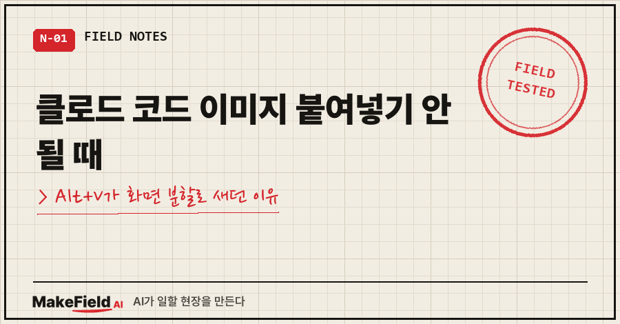
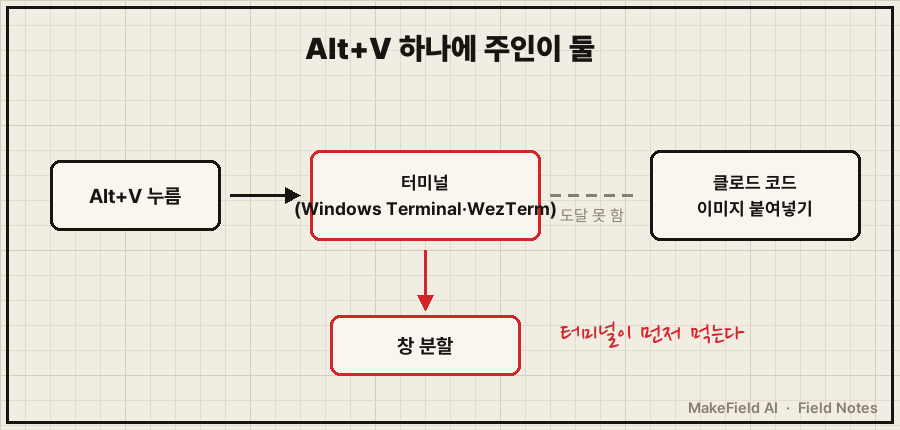
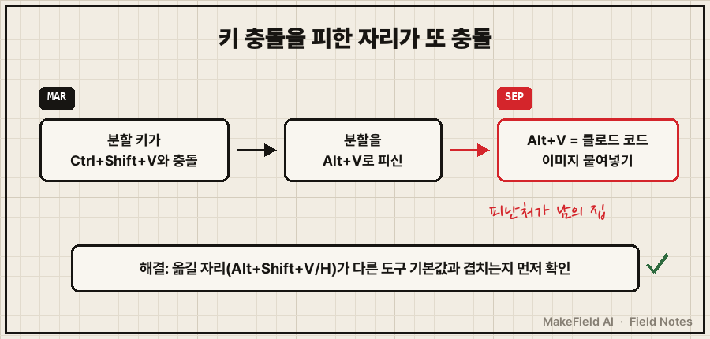
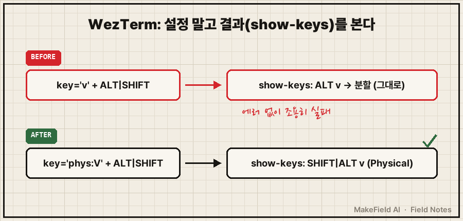

윈도우에서 클로드 코드(Claude Code) 이미지 붙여넣기 기본 단축키는 Alt+V입니다. 눌렀는데 화면만 반으로 갈라진다면, 터미널 프로그램이 같은 키를 '창 분할'로 먼저 가로채고 있는 거예요. 터미널 쪽 분할 키를 다른 자리로 옮기면 바로 돌아옵니다.
공식 문서 기준(2026년 10월 확인)으로 이미지 붙여넣기(chat:imagePaste)는 맥·리눅스가 Ctrl+V, 윈도우와 WSL은 Alt+V예요. 그래서 윈도우 사용자는 Ctrl+V를 눌러보고 "안 되네" 하기 쉽고, Alt+V까지 갔는데도 안 되면 대부분 터미널 키 충돌입니다.
저는 제조 현장에서 제어 일을 15년째 하고 있고, 퇴근 후엔 개인 PC에서 클로드 코드로 이것저것 자동화를 굴려요. 지난 9월에 이 증상을 직접 겪었고, 고치다가 함정을 하나 더 밟았습니다. 따라 하실 수 있게 순서대로 적어볼게요.
1. 증상: Alt+V를 누르면 터미널이 반으로 쪼개져요
화면 캡처를 떠서 클로드 코드 입력창에 붙이려고 Alt+V를 눌렀어요.
그런데 이미지는 안 들어가고 터미널 창이 옆으로 하나 더 열렸습니다.
다시 눌러도 또 분할.. 창만 늘어나요.
원리는 단순해요. 키를 누르면 터미널 프로그램이 먼저 받고, 터미널이 쓰지 않는 키만 그 안의 클로드 코드로 넘어갑니다. 터미널에 Alt+V가 '창 분할'로 잡혀 있으면 클로드 코드는 그 키를 구경도 못 해요.

2. 원인 확인: 제 터미널 두 개가 다 감염돼 있었어요
저는 Windows Terminal과 WezTerm을 둘 다 써요. 설정 파일을 열어 alt+v로 검색해 보니 두 곳 모두 분할 키로 잡혀 있었습니다.
| 터미널 | 설정 파일 | Alt+V에 걸려 있던 동작 |
|---|---|---|
| Windows Terminal | settings.json | Terminal.SplitPaneRight (오른쪽 분할) |
| WezTerm | ~/.wezterm.lua | act.SplitHorizontal (가로 분할) |
Windows Terminal은 설정 화면 왼쪽 아래 'JSON 파일 열기'로 settings.json을 열 수 있어요.
황당한 건 이걸 넣은 사람이 저였다는 겁니다. 작업 기록을 뒤져 보니 반년 전(2026-03-25)에 Ctrl+Shift+V(일반 붙여넣기)와 충돌이 나서, 분할 키를 Alt+V/Alt+H로 '피신'시켜 둔 거였어요. 그 피난처가 이번엔 이미지 붙여넣기 자리였고요. 키 충돌을 피하려다 다른 키 충돌을 만든, 같은 유형의 함정을 두 번 밟은 셈이죠..

3. 해결: 분할 키를 옮길 자리부터 먼저 확인했어요
이번엔 "어디로 옮길까"를 먼저 따졌어요. 고른 자리는 Alt+Shift+V / Alt+Shift+H입니다. 옮기기 전에 이 조합이 Windows Terminal·WezTerm·클로드 코드 세 곳 기본값과 겹치지 않는지 확인했어요. 참고로 Windows Terminal 공식 문서 기본값을 보면 Alt+Shift 조합은 D·마이너스·플러스(창 분할)와 방향키(창 크기 조절)에 쓰이고, V와 H는 비어 있습니다.
Windows Terminal은 settings.json의 keys 값만 바꾸면 끝이에요.
{ "id": "Terminal.SplitPaneRight", "keys": "alt+shift+v" },
{ "id": "Terminal.SplitPaneDown", "keys": "alt+shift+h" }고치기 전에 원본은 날짜를 붙여 .bak_20260922 로 복사해 뒀어요.
4. 두 번째 함정: WezTerm은 고쳤는데도 그대로였어요
WezTerm도 같은 식으로 고쳤어요. 그런데 다시 Alt+V를 누르니 여전히 분할됩니다. 에러 메시지도 없었어요.
{ key = 'v', mods = 'ALT|SHIFT', ... } -- 실패: 제 환경에선 SHIFT가 문자에 흡수돼 ALT+V로 등록됨
{ key = 'phys:V', mods = 'ALT|SHIFT', ... } -- 정답: 물리 키 위치로 지정WezTerm은 기본적으로 '그 키가 만들어내는 문자'로 키를 맞추고(key_map_preference 기본값 Mapped), phys: 를 붙이면 '키보드의 물리 위치'로 맞춥니다(WezTerm 공식 문서). 제 경우엔 key = 'v' 에 SHIFT를 더한 조합이 의도대로 안 잡혔고, phys:V 로 바꾸자 해결됐어요.
이걸 잡은 건 wezterm show-keys 였습니다. 실제로 등록된 키 목록을 출력해 주는 명령이라, 설정 파일이 아니라 결과를 보고 판단할 수 있어요. 오늘 다시 돌려 본 제 PC 출력에서 분할 줄만 옮겼어요(작업 폴더 경로는 가렸어요).
> wezterm show-keys (분할 줄 2개만 발췌)
SHIFT | ALT h (Physical) -> SplitVertical(SpawnCommand domain=CurrentPaneDomain cwd=C:\작업폴더)
SHIFT | ALT v (Physical) -> SplitHorizontal(SpawnCommand domain=CurrentPaneDomain cwd=C:\작업폴더)(Physical) 이 붙어 있고 ALT 단독 v 줄이 없으면 성공이에요.

5. 예비 키를 걸어두면 클로드 코드 이미지 붙여넣기가 다시 안 막혀요
터미널을 재설치하거나 설정이 초기화되면 같은 일이 또 생길 수 있어요. 그래서 클로드 코드 쪽에 예비 키를 하나 더 걸었습니다. 클로드 코드에서 /keybindings 를 입력하면 ~/.claude/keybindings.json 이 만들어지거나 열려요.
{
"bindings": [
{
"context": "Chat",
"bindings": { "ctrl+alt+v": "chat:imagePaste" }
}
]
}공식 문서상 이 파일은 저장하면 자동 감지돼서 클로드 코드를 다시 켤 필요가 없어요. 이제 Alt+V가 막혀도 Ctrl+Alt+V가 남습니다.
고려했던 다른 방법도 적어둘게요.
- 클로드 코드 키만 바꾸기: 가장 빠르지만 터미널에 Alt+V 분할이 그대로 남아 다음에 또 헷갈려요.
- 터미널 분할 키를 아예 해제: 분할을 자주 써서 포기했어요.
- 분할 키 이동 + 예비 키 추가: 손이 두 번 가지만 원인 제거와 대비를 같이 할 수 있어 이걸 골랐습니다.
결과적으로 Alt+V 이미지 붙여넣기는 실측으로 정상 확인했어요. 다만 Alt+V를 여러 번 눌러 이미지를 여러 장 쌓는 건 아직 직접 검증 못 했습니다.
6. 자주 묻는 질문
Q. 윈도우에서 Ctrl+V로는 이미지가 왜 안 붙나요?
클로드 코드 공식 문서상 윈도우의 이미지 붙여넣기 기본키는 Alt+V예요. Ctrl+V가 이미지 붙여넣기인 건 맥·리눅스 기준이고, WSL은 둘 다 기본으로 잡혀 있습니다.
Q. 캡처가 아니라 PC에 있는 파일을 주고 싶으면요?
탐색기에서 파일을 터미널 창으로 끌어다 놓으면 경로가 자동으로 입력돼요. 저는 PDF·CSV·엑셀 세 개를 한 번에 끌어다 놓는 것까지 확인했습니다.
Q. 키를 고쳤는데 그대로면 뭘 먼저 보나요?
설정 파일이 아니라 실제 등록 결과를 보세요. WezTerm은 wezterm show-keys, 클로드 코드는 claude --debug 로 키 설정 경고를 확인할 수 있어요.
이번 일로 남은 교훈은 두 가지예요. 단축키를 옮길 땐 옮겨 갈 자리가 다른 도구의 기본값인지 먼저 보고, 고친 뒤엔 결과 목록으로 확인한다. 이 일화는 예전에 CLI AI 에이전트를 소개하는 글(https://blog.naver.com/makefield_ai/224421231773)에서 몇 줄로만 언급했는데, 이번에 해결 순서까지 정리해 봤어요.
여러분 터미널엔 Alt 키 조합이 몇 개나 잡혀 있나요? 한 번 검색해 보면 의외의 손님이 있을지도 모릅니다.
개인 PC에서 AI 도구를 굴리며 막혔던 지점들은 makefield.ai에 차곡차곡 정리하고 있습니다.
출처
- Claude Code 공식 문서, Customize keyboard shortcuts (chat:imagePaste 기본키 "Ctrl+V (Alt+V on Windows and WSL)", keybindings.json 위치·자동 감지) → https://code.claude.com/docs/en/keybindings
- WezTerm 공식 문서, Keyboard Concepts (phys:/mapped:, key_map_preference) → https://wezterm.org/config/keys.html
- Microsoft Learn, Windows Terminal Actions (기본 Alt+Shift 분할·크기 조절 키) → https://learn.microsoft.com/en-us/windows/terminal/customize-settings/actions
태그: #클로드코드이미지붙여넣기 #클로드코드AltV #ClaudeCode #클로드코드단축키 #이미지붙여넣기안됨 #캡처붙여넣기 #윈도우터미널 #WindowsTerminal #윈도우터미널단축키 #WezTerm #wezterm단축키 #keybindings #단축키충돌 #AI코딩도구 #MakeFieldAI